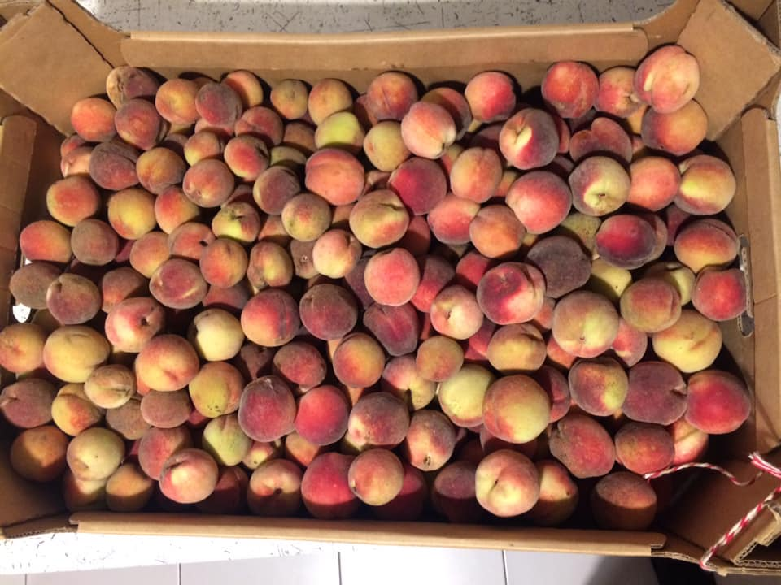

Wino brzoskwiniowe (h3)
Pomysł na wino brzoskwiniowe pojawił się przypadkiem. Dostałem ponad 10 kilogramów owoców i długo się nie namyślając kupiłem drożdże, pożywkę i inne akcesoria. Do dzieła! Data nastawu: 14 września 2019 r. wino brzoskwiniowe Po wypestkowaniu wyszło równiutkie 10,5 kilograma. Do owoców dodałem 4 litry wody i jedynie 1 kilogram cukru. Dodałem drożdże Fermivin 15% i pożywkę Browin. BLG na starcie było równe 12° Tej pulpy brzoskwiniowej było jakieś 15-16 litrów (już po dodaniu wody). Po tygodniu, 21 września, BLG spadło do 1°. Dodałem 3 litry wody + 1 kilogram cukru. A później, wieczorkiem dodałem jeszcze raz 3 litry wody i 1 kg cukru. BLG znów 12°. 25 września drożdże znów zjadły cały cukier. BLG=0°. No to liczymy, ile procent będzie miało nasze wino brzoskwiniowe – tabelka przeliczeniowa znajduje się tutaj. 12°-1° = 4,9% 12°= 5,2% Aktualnie winko będzie miało około 10%. Dziś jest 1 października, plan jest taki, że jutro znów dodam kilogram cukru ale już pewnie rozpuszczony w winie. Zobaczymy jak będzie.